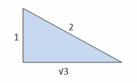

This is one of the 'standard' right triangles you should be able recognize on sight. (Another is the 45-45-90 triangle).
A fact you should commit to memory is:

Notice that the smallest side (1) is opposite the smallest angle (30°), and the longest side (2) is opposite the largest angle (90°). So while writing the ratio as 1: √3 :2 would be more correct, many find the sequence 1: 2: √3 easier to remember, especially when it is spoken.
See also Side /angle relationships of a triangle. In the figure above, as you drag the vertices of the triangle to resize it, the angles remain fixed and the sides remain in this ratio.